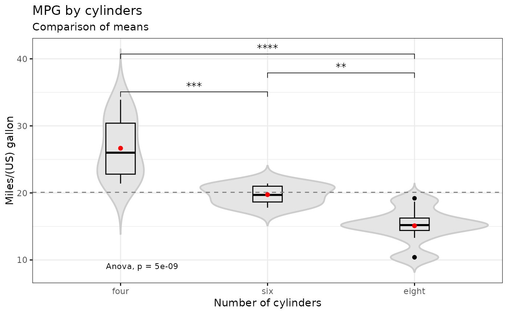

Some functions won't work without running library(ggpubr).
e_plot_compare_medians(
dat_plot,
var_response = NULL,
var_groups = NULL,
label_response = NULL,
label_groups = NULL,
plot_title = NULL,
plot_subtitle = NULL,
comparisons = c("all", list(), NULL)[1],
cm_method = c("wilcox.test", "t.test")[1],
cm_p.adjust.method = c("holm", "hochberg", "hommel", "bonferroni", "BH", "BY", "fdr",
"none")[1],
cm_dot = c("mean", "median")[2],
cm_fun = c("mean", "mean_se", "mean_sd", "mean_ci", "mean_range", "median",
"median_iqr", "median_hilow", "median_q1q3", "median_mad", "median_range")[7],
cm_error.plot = c("pointrange", "linerange", "crossbar", "errorbar", "upper_errorbar",
"lower_errorbar", "upper_pointrange", "lower_pointrange", "upper_linerange",
"lower_linerange")[4],
sw_add = c("none", "dotplot", "jitter", "boxplot", "point")[2],
sw_caption_desc = c(TRUE, FALSE)[1],
symnum.args = list(cutpoints = c(0, 1e-04, 0.001, 0.01, 0.05, 0.1, 1), symbols =
c("****", "***", "**", "*", "-", "ns"))
)Data.frame
Variable name of response (y) (as string, "var_name")
Variable name of groups (x) (as string, "var_name")
Label for y-axis
Label for x-axis
Plot title
Plot subtitle
NULL=no comparisons, "all"=all pairwise comparisons, or a list of comparisons to make, such as list(c("A", "B"), c("A", "C")).
Compare method: "wilcox.test" for nonparametric, "t.test" for parametric
Compare method: p-value adjust method "holm", "hochberg", "hommel", "bonferroni", "BH", "BY", "fdr", "none"
Compare method: red center estimate "mean", "median"
Compare method: red error bar range "mean", "mean_se", "mean_sd", "mean_ci", "mean_range", "median", "median_iqr", "median_hilow", "median_q1q3", "median_mad", "median_range"
Compare method: red error bar style "pointrange", "linerange", "crossbar", "errorbar", "upper_errorbar", "lower_errorbar", "upper_pointrange", "lower_pointrange", "upper_linerange", "lower_linerange"
Add a second plot to the violin plot: "none", "dotplot", "jitter", "boxplot", "point"
T/F for caption describing red summary center and spread
List of cutpoints and symbols for significance
p_pub p_pub$result_compare_means has pairwise comparison table. p_pub is a ggplot plot grob.
# medians
e_plot_compare_medians(
dat_plot = dat_mtcars_e
, var_response = "mpg"
, var_groups = "cyl"
, label_response = labelled::var_label(dat_mtcars_e$mpg)
, label_groups = labelled::var_label(dat_mtcars_e$cyl)
, plot_title = "MPG by cylinders"
, plot_subtitle = "Comparison of medians"
, comparisons = "all"
, cm_method = "wilcox.test"
, cm_p.adjust.method = "holm"
, cm_dot = "median"
, cm_fun = "median_iqr"
, cm_error.plot = "errorbar"
, sw_add = "dotplot"
, sw_caption_desc = TRUE
)
#> Warning: The `fun.y` argument of `stat_summary()` is deprecated as of ggplot2 3.3.0.
#> ℹ Please use the `fun` argument instead.
#> ℹ The deprecated feature was likely used in the ggpubr package.
#> Please report the issue at <https://github.com/kassambara/ggpubr/issues>.
#> Warning: The `fun.ymin` argument of `stat_summary()` is deprecated as of ggplot2 3.3.0.
#> ℹ Please use the `fun.min` argument instead.
#> ℹ The deprecated feature was likely used in the ggpubr package.
#> Please report the issue at <https://github.com/kassambara/ggpubr/issues>.
#> Warning: The `fun.ymax` argument of `stat_summary()` is deprecated as of ggplot2 3.3.0.
#> ℹ Please use the `fun.max` argument instead.
#> ℹ The deprecated feature was likely used in the ggpubr package.
#> Please report the issue at <https://github.com/kassambara/ggpubr/issues>.
#> Bin width defaults to 1/30 of the range of the data. Pick better value with
#> `binwidth`.
#> Warning: Computation failed in `stat_summary()`.
#> Caused by error in `get()`:
#> ! object 'median_iqr' of mode 'function' was not found
#> Warning: cannot compute exact p-value with ties
#> Warning: cannot compute exact p-value with ties
#> Warning: cannot compute exact p-value with ties
# means
e_plot_compare_medians(
dat_plot = dat_mtcars_e
, var_response = "mpg"
, var_groups = "cyl"
, label_response = labelled::var_label(dat_mtcars_e$mpg)
, label_groups = labelled::var_label(dat_mtcars_e$cyl)
, plot_title = "MPG by cylinders"
, plot_subtitle = "Comparison of means"
, comparisons = "all"
, cm_method = "t.test"
, cm_p.adjust.method = "holm"
, cm_dot = "mean"
, cm_fun = "mean_ci"
, cm_error.plot = "errorbar"
, sw_add = "boxplot"
, sw_caption_desc = FALSE
)
#> Warning: Computation failed in `stat_summary()`.
#> Caused by error in `get()`:
#> ! object 'mean_ci' of mode 'function' was not found
#> Warning: cannot compute exact p-value with ties
#> Warning: cannot compute exact p-value with ties
#> Warning: cannot compute exact p-value with ties
